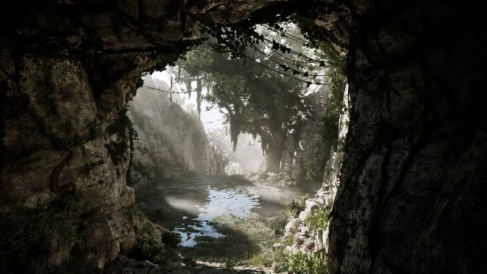
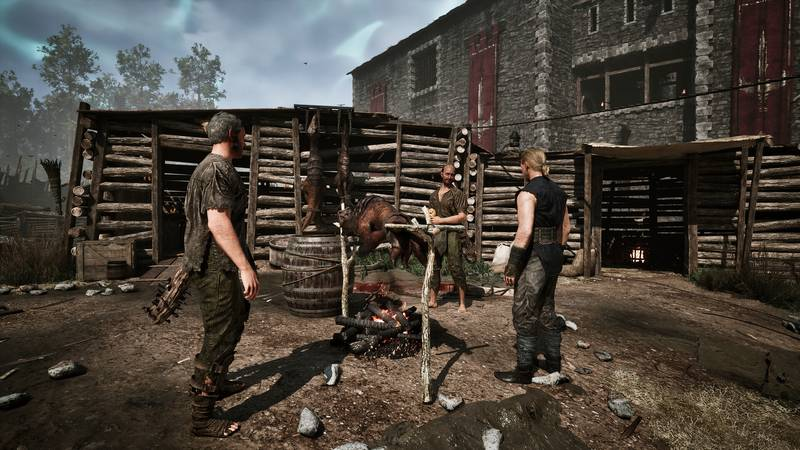
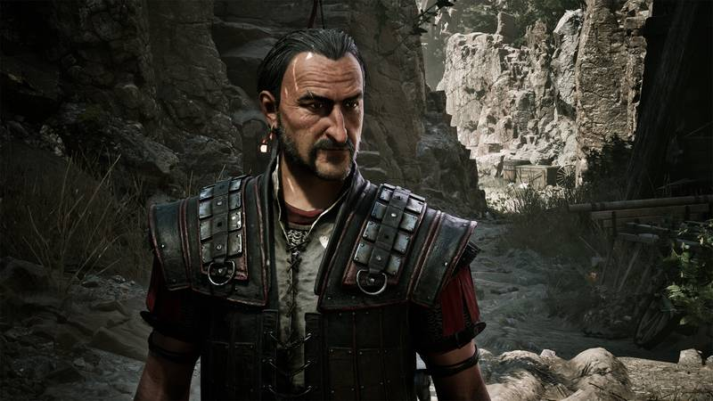
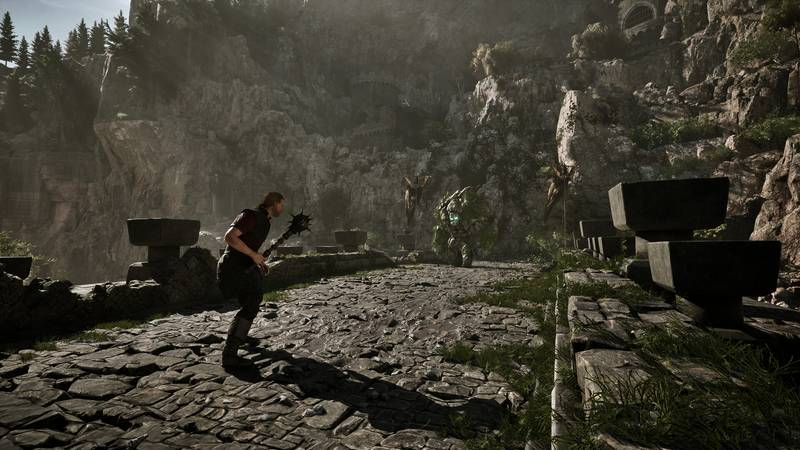

⚔️ Complete Factions Guide
Old Camp, New Camp, Swamp Camp — tested post-launch, everything you need in one guide
⚡ TL;DR — At a Glance
🎮 First playthrough? → Pick Old Camp 🔥 (the most welcoming starter route — Diego guides you every step, quest objectives are clear)
🏹 Bow / Dexterity build? → Pick New Camp 💧 (mercenary path, best early-game income, Water magic dominates late-game, no Chapter 4 banishment)
🔮 Melee + magic hybrid? → Pick Swamp Camp 🌀 (Templar path, psionic magic ignores armor, but magic caps at Circle 4)
Table of Contents

Faction Mechanics Overview
Your faction choice is made in Chapter 1 and is permanent — once you join, you cannot switch. The ending you get, the gear you can equip, the magic you can learn, and how Chapter 4 plays out all depend on this decision.
You can complete all three factions' entry quests before committing. There is no rush — visit the Old Camp, New Camp, and Swamp Camp, clear every available quest, collect the XP, gear, and ore, then pick the one you like best. All three factions require you to reach Level 5 before formally joining.
Full Comparison Table
| Aspect | Old Camp 🔥 | New Camp 💧 | Swamp Camp 🌀 |
|---|---|---|---|
| Leader | Gomez | Lee | The Brotherhood (Five Gurus) |
| Hierarchy | Digger → Shadow → Guard → Fire Mage | Bandit → Mercenary | Novice → Templar |
| Combat Style | One-handed melee, heavy armor | Two-handed weapons, bows, dexterity | Two-handed + psionic magic hybrid |
| Magic System | Fire Magic (Circles 1–6) | Water / Ice Magic (Circles 1–6) | Psionic / Sleeper Magic (Circles 1–4) |
| Magic Cap | Circle 6 (maximum) | Circle 6 (maximum) | Circle 4 (hard cap) |
| Admission Quests | Complete Cast the Shadow, Trial of Faith + Level 5 | Complete Lord's quests, the Raid + Level 5 | Earn approval from 4 of 5 Gurus + Level 5 |
| Join Reward | Shadow armor + 1000 XP | Bandit armor + 1500 XP | Novice robe + 750 XP |
| Economy | Average | Best (quests pay well, can smuggle Swampweed) | Lower, but collect 3 free Swampweed daily from Fortuno |
| Key NPCs | Diego, Thorus, Scatty, Fingers, Mitten, Corristo | Lee, Wolf, Saturas, Sweeney | Namiib, Tion, Oran, Kaldar, Fortuno, Gonadach |
| Chapter 4 Issue | Gomez banishes you (scripted) | Unaffected | Unaffected |
| Difficulty | ⭐ Easiest | ⭐⭐ Medium | ⭐⭐⭐ Harder |
🎯 Best Picks for Your Goals
| Your Goal | Best Faction |
|---|---|
| First playthrough / smoothest experience | Old Camp 🔥 |
| Pure mage (highest spell tier) | Old Camp (Fire) or New Camp (Water) |
| Heavy tank / melee | Old Camp 🔥 |
| Dexterity archer / rogue | New Camp 💧 |
| Fastest early-game money | New Camp 💧 |
| Hybrid melee + magic (armor-ignoring psionics) | Swamp Camp 🌀 |
| Most unique story atmosphere | Swamp Camp 🌀 |
| No Chapter 4 Gomez banishment | New Camp 💧 |
🔥 Old Camp — Path of the Fire Mage

Location: Center of the Valley of Mines, the direction Diego guides you toward from the very start.
Leader: Gomez rules the Old Camp, which has the highest concentration of merchants and blacksmiths.
Pros & Cons
- ✅ Most welcoming starter experience — Diego guides you the whole way
- ✅ Most merchants and trainers of any camp
- ✅ Fire Magic reaches Circle 6, one of the strongest spell systems
- ✅ Heavy Guard armor path, high defense
- ✅ Free safehouse (ask Guy for the red tent beside the arena)
- ❌ In Chapter 4, Gomez kicks you out of the Old Camp, disrupting your standing and questlines
- ❌ Ore income not as good as New Camp
How to Join
Complete Cast the Shadow (from Thorus) and the Trial of Faith, reach Level 5, and you can formally join. Reward: Shadow armor.
Recommended Build: Warrior
| Strength: rush to 30+ | One-handed melee damage, meets most weapon requirements |
| One-Handed: train with Scatty (10 LP + 50 ore) | Unlocks blocking, negates all damage |
| Lockpicking: train with Fingers (10 LP + 100 ore) | Doubles your margin for error, opens most chests |
💧 New Camp — Mercenaries & Water Mages

Location: West side of the valley. Let Mordrag escort you — he kills the enemies along the way, and you get all the XP.
Pros & Cons
- ✅ Quest rewards pay the most ore; can earn massive ore in Chapter 1 by smuggling Swampweed
- ✅ Water Magic reaches Circle 6; ice control spells are incredibly strong; attribute bonus is 30 points higher than Fire Mages
- ✅ Receive a free powerful weapon at the end of Chapter 1
- ✅ Unaffected by Gomez's Chapter 4 banishment — your progression is never interrupted
- ❌ Missable quests during the join process — picking the wrong dialogue option locks you out
- ❌ Early-game economy less stable than Old Camp
How to Join
Complete the quest chain running errands for Lee, including the Raid quest, reach Level 5, and join. Reward: Bandit armor + 1500 XP.
Recommended Build: Archer
| Dexterity: rush to 30+ | Bow damage and accuracy; also the key stat for pickpocket success |
| Bow Skill | Train with Wolf; kiting tactics are the signature New Camp mercenary playstyle |
🌀 Swamp Camp — Templars & the Sleeper

Location: Eastern swamplands of the valley. Let Baal Parvez escort you (he is an Old Camp guru who can guide you through dangerous territory).
Pros & Cons
- ✅ Earliest access to magic — psionic spells (Sleep, Fear, Charm, Control) are usable early in the game
- ✅ Templar is a melee + magic hybrid class with the most unique playstyle
- ✅ Psionic magic ignores enemy armor, devastating against heavily armored foes
- ✅ Collect 3 free Swampweed per day from Fortuno (restore mana or sell for ore)
- ❌ Magic is permanently capped at Circle 4 — cannot learn top-tier spells
- ❌ Hardest camp to reach — the route is crawling with dangerous creatures
- ❌ Requires approval from at least 4 of 5 Gurus, a more involved process than other factions
How to Join
Complete the Swamp Camp initiation rite, earn the approval of at least 4 of the 5 Gurus (Namiib, Tion, Oran, Kaldar, and the fifth), reach Level 5, and join. Reward: Novice robe + 750 XP.
Recommended Build: Templar
| Strength: 20+ | Meets two-handed weapon requirements |
| Mana: moderate investment | Psionic spells have low costs — you do not need to max this |
| Two-Handed: train with Gonadach | Earn your first Templar armor by the end of Chapter 1 |
What to Know Before Joining
💡 Before You Commit
- Complete every quest in all three camps
- Reach at least Level 5 (all three factions require this)
- Do not buy armor beforehand — you get your first set free upon joining
- Make a permanent manual save
⚔️ After You Join
- You can still visit other camps — you just cannot buy their best gear or learn their highest-tier skills
- Faction-specific NPCs give you exclusive questlines
- Your magic ceiling is set by your faction (Old/New = Circle 6, Swamp = Circle 4)
📋 Platform Info
- Launching simultaneously on PC, PS5, Xbox Series X|S (June 5, 2026)
- 42 Steam achievements, including faction-specific ones
- No minimap, no quest markers (old-school design)
FAQ
Can I switch factions after joining?
No. Your faction choice is permanent and cannot be changed after you formally join. This is why making a manual save at the decision point is essential if you want to experience other factions without replaying the entire game.
Which faction has the best story?
Many veteran players recommend Old Camp for a first playthrough — the emotional arc with Diego from beginning to end has the strongest payoff. The New Camp's rebellion storyline is also very compelling. Swamp Camp is recommended for a second playthrough.
Is Swamp Camp magic really capped at Circle 4?
Yes. This is a hard design limit — no quest or item can break it. However, psionic magic is extremely powerful early on and is the only spell school that ignores enemy armor. Many boss fights are easier with Fear/Control spells than by stacking raw damage.
Can I use magic if I do not go the mage path?
Each faction has its own advanced magic path (Old Camp = Fire Mage, New Camp = Water Mage, Swamp Camp = Templar psionics). If you skip the mage path, you can still use scrolls, but scrolls are single-use only.
Do I lose my inventory when banished from the Old Camp in Chapter 4?
No. The gear on your person is not confiscated, but items you left stored in Old Camp chests may be temporarily inaccessible. Keep important items in your inventory before Chapter 4 triggers.
Faction Choice Quiz
Still can't decide? Answer 3 quick questions.
Question 1: Combat Style
What's your preferred way to fight?
⚔️ Heavy Melee
Get in close with heavy armor and a big sword. Tank hits and deal massive damage up close.
🏹 Ranged / Archer
Keep your distance. Use bows, crossbows, and hit-and-run tactics.
🔮 Hybrid (Melee + Magic)
Mix it up. Use weapons for most fights, magic for crowd control and tough enemies.
Question 2: Magic Preference
What kind of magic appeals to you most?
🔥 Fire Magic
Pure destructive power. Burn everything. The strongest damage-dealing spells in the game.
💧 Ice / Water Magic
Crowd control. Freeze enemies in place, control the battlefield, highest magic stat ceiling.
🌀 Psionic (Mind) Magic
Sleep, fear, charm, control. Bypasses armor. Earliest magic access but hard-capped at Circle 4.
Question 3: Playthrough Style
How do you approach games?
🎮 First Playthrough
I want clear objectives, a guided path, and the smoothest experience possible.
⚡ Rebel / Freedom
I want freedom from hierarchy, the best economy, and an uninterrupted mid-game.
🌀 Unique Atmosphere
I want the strangest, most atmospheric experience — even if it's harder.